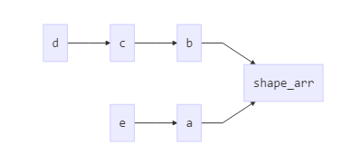
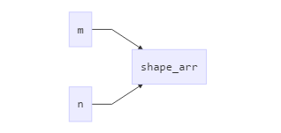

广播（broadcasting）是numpy数组的重要概念，对于它的理解有利于更深入的理解ndarray数组的计算逻辑。Numpy中有一种重要的函数叫做 universal function (ufunc) ，一个 ufunc 以两个 ndarray 作为输入并返回一个ndarray ，ufunc 按照element-by-element方式操作参数中的两个 ndarray ，并返回结果。对于一个ufun np.add 有如下例子:
1 | import numpy as np |
np.add 将 arr1 和 arr2中相同位置的元素相加得到一个ndarray 类型的而结果。
那么问题来了，如果做为输入参数的两个 ndarray 的 具有不同的shape怎么办呢？广播就是用来解决这个问题的。
问题分析
首先我们通过下面的例子来分析一下两个 ndarray 有哪些中不同shape的参数？
假设一个参数固定为 arr.shape：(5, 6)
另外一个参数为
a.shapeis (5,1)b.shapeis (1,6)c.shapeis (6,)d.shapeis () ：一个标量(scalar)e.shapeis (5,)- f 另外还有一种情况：两个数组分别为 m.shape(5, 1), n.shape(1,6)， 求m 和n 的ufunc结果。
g.shapeis (4, 3)h.shapeis (4, 6)
理论上，广播可以解决以上每种情况，但是，我们常见的是 a、b、c、d 四种，e、f 偶尔会遇到，g、h基本遇不到。
广播的机制
下面为Broadcasting对广播机制的描述：
- All input arrays with
ndimsmaller than the input array of largestndim, have 1’s prepended to their shapes. （如果不人为指定，默认是在shape的最前面增加若干个 1，使得两个array的 ndim属性相等）- The size in each dimension of the output shape is the maximum of all the input sizes in that dimension.
- An input can be used in the calculation if its size in a particular dimension either matches the output size in that dimension, or has value exactly 1.
- If an input has a dimension size of 1 in its shape, the first data entry in that dimension will be used for all calculations along that dimension. In other words, the stepping machinery of the
ufuncwill simply not step along that dimension (the stride will be 0 for that dimension).
按照上述机制，可以将a-e5种情况对应的广播机制处理流程整理成如下图所示的过程：其中shape_arr 是一个和arr的shape相同的数组。该流程中变化的是他们的shape

问题 f 中 m 和 n 的shape变化流程是这样的:

需要强调的是：广播机制是我们理解Numpy的一种逻辑模型，在实际的数据计算阶段是不会沿着轴长度为1的方向将数组复制若干份的。
举例
下面以 ufunc 函数 np.add 为例介绍以上每种情况数据处理流程。
数据准备：
1 | arr |
情况a & 情况b
1 | a = np.arange(5).reshape(5, 1) |
np.add(arr, a) 的计算过程可以理解为如下过程：
将a的第一列数据沿着轴1复制，得到如下数组:（其实只有这一步能算的是广播）
1
2
3
4
5array([[0, 0, 0, 0, 0, 0],
[1, 1, 1, 1, 1, 1],
[2, 2, 2, 2, 2, 2],
[3, 3, 3, 3, 3, 3],
[4, 4, 4, 4, 4, 4]])将该数组与arr相加
np.add(arr, b) 的计算过程可以理解为如下过程：
将a的第一列数据沿着轴1复制，得到如下数组:（其实只有这一步能算的是广播）
1
2
3
4
5
6array([[0, 1, 2, 3, 4, 5],
[0, 1, 2, 3, 4, 5],
[0, 1, 2, 3, 4, 5],
[0, 1, 2, 3, 4, 5],
[0, 1, 2, 3, 4, 5],
[0, 1, 2, 3, 4, 5]])将该数组与arr相加
情况c
1 | c = np.arange(6).reshape(6) |
该过程可以理解为如下过程：
- 先将c转换成情况b，c.shape is (6,) ，在shape的最前面添加个 ‘1’ 使得 c.shape is (1, 6)。即使
c.ndim == arr.ndim - 按照情况b进行计算
情况d
1 | d = 5 |
该过程可以理解为如下过程：
d.shape is (,) ，在shape的最前面添加两个 ‘1’ 使得 d.shape is (1, 1)。即使
c.ndim == arr.ndim在轴1，和轴0上分别复制，得到：
1
2
3
4
5array([[5, 5, 5, 5, 5, 5],
[5, 5, 5, 5, 5, 5],
[5, 5, 5, 5, 5, 5],
[5, 5, 5, 5, 5, 5],
[5, 5, 5, 5, 5, 5]])将该数组与arr相加
情况e
1 | e = np.arange(5).reshape(5) |
如上所示，直接操作arr和e是错误的。由于广播机制默认是在e.shape的最前面加一个‘1’，这样 arr.shape is (5, 6)，e.shape is (1, 5)，但是 最后一个轴的值不想等，所以不能计算。
如果实际情况允许的话，我们可以e当做一个列向量，即，shape(5, 1)。可以通过如下两种方法实现：通过 reshape函数 或者 np.newaxis
推荐使用np.newaxis
1 | e_reshape = e.reshape(5, 1) |
情况f
1 | m = np.arange(5).reshape(5, 1) |
m和n的ndim是相等的，但是m.shape is (5, 1)， n.shape is (1, 6)。
- 对于轴1 来说，需要沿着轴1 将m复制6次得到：
1 | array([[0, 0, 0, 0, 0, 0], |
- 对于轴0来说，需要将n沿着轴0复制5次得到：
1 | array([[0, 1, 2, 3, 4, 5], |
- 然后将以上两个数组相加。
总结
广播就是用于操作 ndim相同的两个数组的。
这两个数组的shape值只能是两种情况(即，对应的轴长度)：
- 对应位置的值相等，
- 对应位置的值不相等，但其中一个必须是 1。
对于ndim不同的两个数组需要在 某个数组的shape中合适的位置补 1，使得 ndim想等:
- 默认是在shape的最前面补充若干个 1，
- 也可以通过reshape函数或者np.newaxis 人为指定需要补 1 的轴。
《利用Python进行数据分析》中用一句话定义了广播的原则
如果两个数据的后缘维度(trailing dimension, 即从末尾开始算起的维度)的轴长度相符或者一方的长度是1，则认为他们是广播兼容的。广播会在确实和(或)长度为1的维度上进行。
再次强调一下：广播机制是我们理解Numpy的一种逻辑模型，在实际的数据计算阶段是不会沿着轴长度为1的方向将数组复制若干份的。
参考资料
利用python进行数据分析